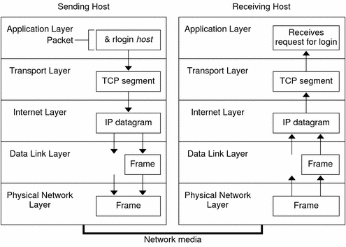

Previous
Previous
Network Administration
The Simple Network Management Protocol (SNMP) enables you to view the layout of your network and the status of key machines. SNMP also enables you to obtain complex network statistics from software that is based on a graphical user interface (GUI). Many companies offer network management packages that implement SNMP.
Routing Protocols
The Routing Information Protocol (RIP) and the Router Discovery Server Protocol (RDISC) are two routing protocols for TCP/IP networks. They are described in Routing Protocols in the Solaris OS.
How the TCP/IP Protocols Handle Data Communications
When a user issues a command that uses a TCP/IP application layer protocol, a series of events is initiated. The user's command or message passes through the TCP/IP protocol stack on the local system. Then, the command or message passes across the network media to the protocols on the remote system. The protocols at each layer on the sending host add information to the original data.
Protocols on each layer of the sending host also interact with their peers on the receiving host. Figure 1-1 shows this interaction.
Data Encapsulation and the TCP/IP Protocol Stack
The packet is the basic unit of information that is transferred across a network. The basic packet consists of a header with the sending and receiving systems' addresses, and a body, or payload, with the data to be transferred. As the packet travels through the TCP/IP protocol stack, the protocols at each layer either add or remove fields from the basic header. When a protocol on the sending system adds data to the packet header, the process is called data encapsulation. Moreover, each layer has a different term for the altered packet, as shown in the following figure.
Figure 1-1 How a Packet Travels Through the TCP/IP Stack
This section summarizes the life cycle of a packet. The life cycle starts when you issue a command or send a message. The life cycle finishes when the appropriate application on the receiving system receives the packet.
Application Layer: Where a Communication Originates
The packet's history begins when a user on one system sends a message or issues a command that must access a remote system. The application protocol formats the packet so that the appropriate transport layer protocol, TCP or UDP, can handle the packet.
Suppose the user issues an rlogin command to log in to the remote system, as shown in Figure 1-1. The rlogin command uses the TCP transport layer protocol. TCP expects to receive data in the form of a stream of bytes that contain the information in the command. Therefore, rlogin sends this data as a TCP stream.
Transport Layer: Where Data Encapsulation Begins
When the data arrives at the transport layer, the protocols at the layer start the process of data encapsulation. The transport layer encapsulates the application data into transport protocol data units.
The transport layer protocol creates a virtual flow of data between the sending and receiving application, differentiated by the transport port number. The port number identifies a port, a dedicated location in memory for receiving or sending data. In addition, the transport protocol layer might provide other services, such as reliable, in order data delivery. The end result depends on whether TCP, SCTP, or UDP handles the information.
TCP Segmentation
TCP is often called a "connection-oriented" protocol because TCP ensures the successful delivery of data to the receiving host. Figure 1-1 shows how the TCP protocol receives the stream from the rlogin command. TCP then divides the data that is received from the application layer into segments and attaches a header to each segment.
Segment headers contain sending and receiving ports, segment ordering information, and a data field that is known as a checksum. The TCP protocols on both hosts use the checksum data to determine if the data transfers without error.
Establishing a TCP Connection
TCP uses segments to determine whether the receiving system is ready to receive the data. When the sending TCP wants to establish connections, TCP sends a segment that is called a SYN to the TCP protocol on the receiving host. The receiving TCP returns a segment that is called an ACK to acknowledge the successful receipt of the segment. The sending TCP sends another ACK segment, then proceeds to send the data. This exchange of control information is referred to as a three-way handshake.
UDP Packets
UDP is a "connectionless" protocol. Unlike TCP, UDP does not check that data arrived at the receiving host. Instead, UDP formats the message that is received from the application layer into UDP packets. UDP attaches a header to each packet. The header contains the sending and receiving ports, a field with the length of the packet, and a checksum.
The sending UDP process attempts to send the packet to its peer UDP process on the receiving host. The application layer determines whether the receiving UDP process acknowledges the reception of the packet. UDP requires no notification of receipt. UDP does not use the three-way handshake.
Internet Layer: Where Packets Are Prepared for Delivery
The transport protocols TCP, UDP, and SCTP pass their segments and packets down to the Internet layer, where the IP protocol handles the segments and packets. IP prepares them for delivery by formatting them into units called IP datagrams. IP then determines the IP addresses for the datagrams, so that they can be delivered effectively to the receiving host.
IP Datagrams
IP attaches an IP header to the segment or packet's header, in addition to the information that is added by TCP or UDP. Information in the IP header includes the IP addresses of the sending and receiving hosts, the datagram length, and the datagram sequence order. This information is provided if the datagram exceeds the allowable byte size for network packets and must be fragmented.
Data-Link Layer: Where Framing Takes Place
Data-link layer protocols, such as PPP, format the IP datagram into a frame. These protocols attach a third header and a footer to "frame" the datagram. The frame header includes a cyclic redundancy check (CRC) field that checks for errors as the frame travels over the network media. Then, the data-link layer passes the frame to the physical layer.
Physical Network Layer: Where Frames Are Sent and Received
The physical network layer on the sending host receives the frames and converts the IP addresses into the hardware addresses appropriate to the network media. The physical network layer then sends the frame out over the network media.
How the Receiving Host Handles the Packet
When the packet arrives on the receiving host, the packet travels through the TCP/IP protocol stack in the reverse order from which it was sent. Figure 1-1 illustrates this path. Moreover, each protocol on the receiving host strips off header information that is attached to the packet by its peer on the sending host. The following process occurs:
The physical network layer receives the packet in its frame form. The physical network layer computes the CRC of the packet, then sends the frame to the data link layer.
The data-link layer verifies that the CRC for the frame is correct and strips off the frame header and the CRC. Finally, the data-link protocol sends the frame to the Internet layer.
The Internet layer reads information in the header to identify the transmission. Then, the Internet layer determines if the packet is a fragment. If the transmission is fragmented, IP reassembles the fragments into the original datagram. IP then strips off the IP header and passes the datagram on to transport layer protocols.
The transport layer (TCP, SCTP, and UDP) reads the header to determine which application layer protocol must receive the data. Then, TCP, SCTP, or UDP strips off its related header. TCP, SCTP, or UDP sends the message or stream to the receiving application.
The application layer receives the message. The application layer then performs the operation that the sending host requested.
TCP/IP Internal Trace Support
TCP/IP provides internal trace support by logging TCP communication when an RST packet terminates a connection. When an RST packet is transmitted or received, information on as many as 10 packets, which were just transmitted, is logged with the connection information.
Finding Out More About TCP/IP and the Internet
Information about TCP/IP and the Internet is widely available. If you require specific information that is not covered in this text, you can probably find what you need in the sources cited next.
Computer Books About TCP/IP
Many trade books about TCP/IP and the Internet are available from your local library or computer bookstore. The following two books are considered the classic texts on TCP/IP:
Craig Hunt. TCP/IP Network Administration - This book contains some theory and much practical information for managing a heterogeneous TCP/IP network.
W. Richard Stevens. TCP/IP Illustrated, Volume I - This book is an in-depth explanation of the TCP/IP protocols. This book is ideal for network administrators who require a technical background in TCP/IP and for network programmers.
TCP/IP and Networking Related Web Sites
The Internet has a wealth of web sites and user groups that are devoted to TCP/IP protocols and their administration. Many manufacturers, including Sun Microsystems, offer web-based resources for general TCP/IP information. The following are helpful web resources for TCP/IP information and general system administration information.
Web Site | Description |
|---|---|
The IETF is the body responsible for the architecture and governance of the Internet. The IETF web site contains information about the various activities of this organization. The site also includes links to the major publications of the IETF. | |
BigAdmin provides information for administering Sun computers. The site offers FAQs, resources, discussions, links to documentation, and other materials that pertain to Solaris OS administration, including networking. |
Requests for Comments and Internet Drafts
The Internet Engineering Task Force (IETF) working groups publish standards documents that are known as Requests for Comments (RFCs). Standards that are under development are published in Internet Drafts. The Internet Architecture Board (IAB) must approve all RFCs before they are placed in the public domain. Typically RFCs and Internet drafts are directed to developers and other highly technical readers. However, a number of RFCs that deal with TCP/IP topics contain valuable information for system administrators. These RFCs are cited in various places throughout this book.
Generally, For Your Information (FYI) documents appear as a subset of the RFCs. FYIs contain information that does not deal with Internet standards. FYIs contain Internet information of a more general nature. For example, FYI documents include a bibliography that list introductory TCP/IP books and papers. FYI documents provide an exhaustive compendium of Internet-related software tools. Finally, FYI documents include a glossary of Internet and general networking terms.
You will find references to relevant RFCs throughout this guide and other books in the Solaris System Administrator Collection.